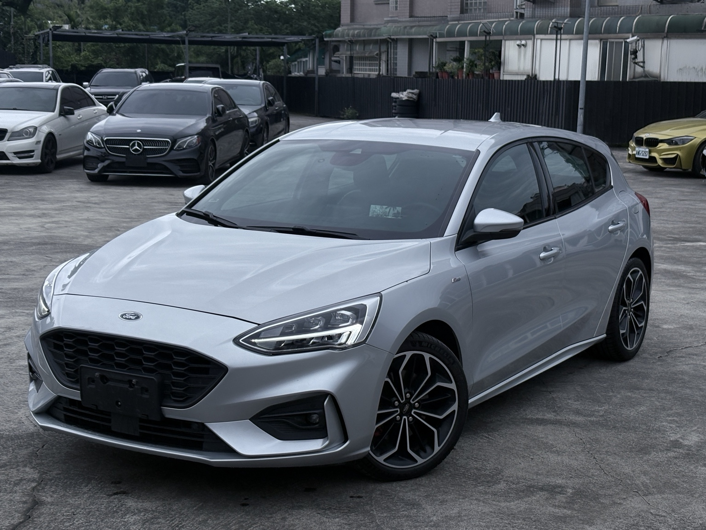
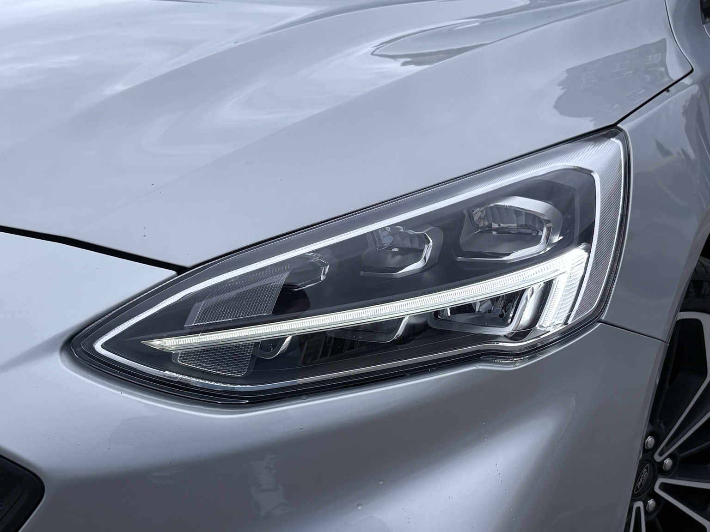
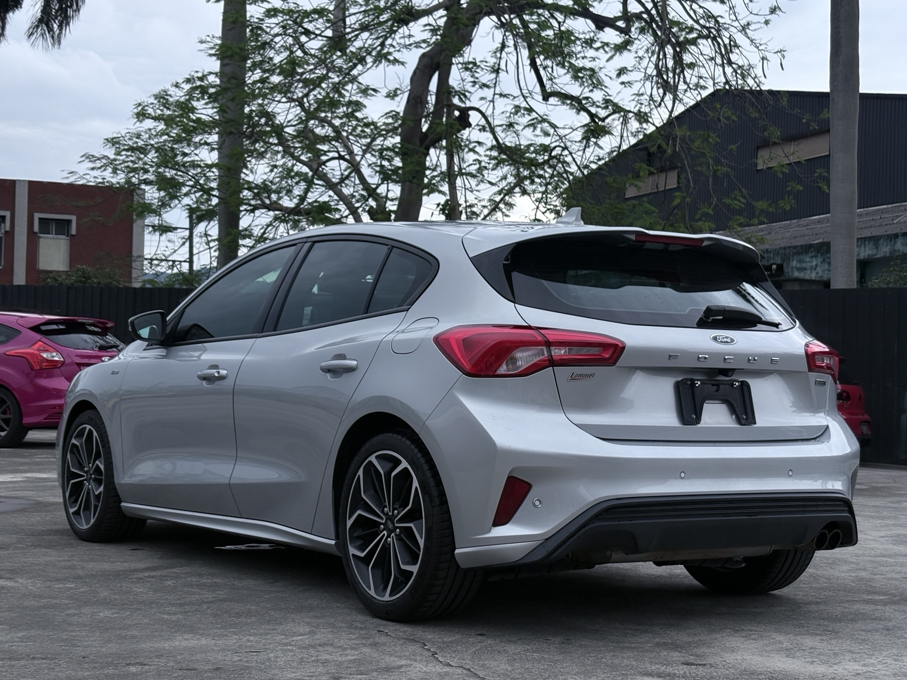
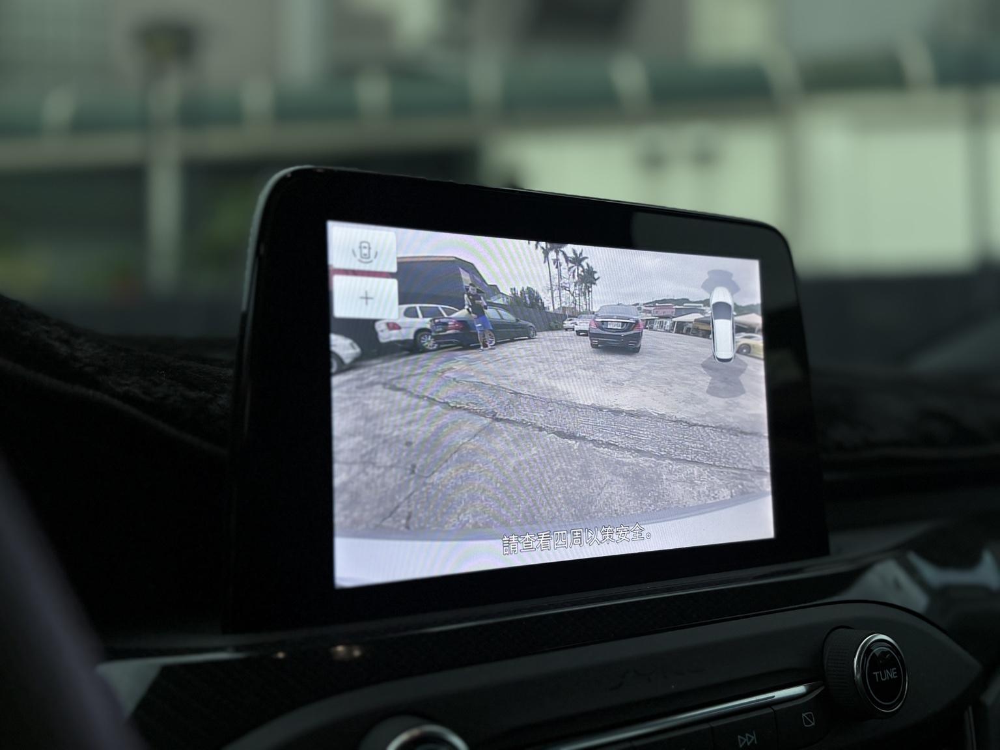

← 返回車庫首頁
2020 Focus ST-Line Lommel
售價：50.8萬
原版件認證車｜里程僅跑8萬公里





重點配備
- ST-Line Lommel 賽道特化版
- 1.5 EcoBoost 182匹渦輪引擎
- 8速手自排變速箱
- ST同源賽道級懸吊
- 後多連桿懸吊
- 18吋ST-Line鋁圈
- 前後加大碟盤
- 紅色卡鉗
- LV2 Co-Pilot360
- ACC全速域定速
- 車道置中輔助
- B&O環艙音響
- Apple CarPlay
- Android Auto
- HUD抬頭顯示器
- Keyless免鑰匙啟動
- 倒車顯影
- 倒車雷達
- 雙區恆溫空調
- ST-Line跑車座椅
- 平底方向盤
車況說明
- 原版件
- 認證車
- 里程8萬公里
- 車況漂亮
- 可全額貸款